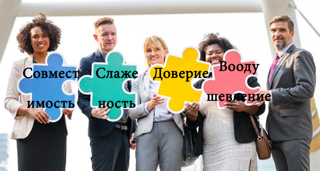

Если кратко, то получилось ситематизировать все отношения, которые были и буду на этой планете. Выяснилось, что человек это пазл и сразу возникает вопрос, а что если собрать картину полностью...
Практика распространения показывает, что тяжело отследить и отрефлексировать взаимодействие философий и идеологий, глобального (есть только общественные интересы) и локального мышления (есть только личностные интрересы), тяжело поставить себя на позицию наблюдателя своего мировозрения, но если получиться у вас, то добро пожаловать в мир новых возможностей.Родственная душа – это тот человек, который присутствует в вашей жизни для того, чтобы вас учить, обогащать и подталкивать к совершенствованию самого себя.
Вдохновение
Клипы вдохновившие меня: Sick Puppies - Maybe, Green Day - Boulevard Of Broken Dreams, Linkin Park - Numb Linkin Park - Heavy Lumen 6 - миллиардов Рагнар Лозброк из сериала Викинги Вот хороший ролик и про то как он собирал команду) Ательстан из Сериала Викинги
Фильмы вдохновившие меня: Бойцовский Клуб, Матрица, Вечное Сияние Чистого Разума, Король Лев, Пиджак
Cмежные области: командообразование (тимбилдинг), психология взаиомдействия людей
Лайфхак по поиску родственных душ или идея знакомства по психологическому расчету
Здравствуйте, а что думаете о такой идее знакомства?... (хочу обратить внимание что это запредельный и глобальный вопрос и может вызвать какие-то эмоции)
Если этот, нестандартный вопрос вызвал у вас эмоцию приобщение, радость, то отлично). Если же обратные, то прошу простить и не бояться его, а посмотреть своему страху в глаза), но вопрос реально глобальный и запредельный как сказать по другому, не знаю. И название "знакомства по психологическому расчету" хорошо отображает суть. Хотя звучит знакомства по психологической совместимости или лайфхак по поиску родственных душ.
Как найти людей, с которыми, можно вместе быстро и эффективно что-то ДЕЛАТЬ? За мимимальный период времени.
Если хорошо подумать, то это расчет ой как пригодиться, например для стартапов, бизнеса, поиска совместимых музыкантов, туризма, партнерства, решения глобальных проблема сообща. Мы живем в мире где конкурируют уже не один человек, а группы людей и чем эффективней группа людей, тем она конкурентноспособнее. Чем слаженей коллектив, тем больше вероятность на успех, развитие.
По психологическому расчету это когда сразу выбираешь по качествами которые нужны. Тут сразу в голову приходит представления слаженного пазла и недостающего элемента, без этого элемента, общая картинка будет не полной. Обычно, мы собираем окружение случайным образом или методом перебора, подбираем "недостающий пазл". А этот подход открывает возможность, знакомиться включая голову и психологический расчет. Понимая свое и чужое влияние. Свои сильные и слабые стороны, и другого человека. Для любого дела необходимы не просто люди, а совместимые люди, иногда проще научить, чем работать в несоместимом не собранном коллетиве.
Как реализовать психологический расчет?
Формула: Макро + Микро взаимодействия людей+Желание знакомистся по псхиологическому расчету=Универальный метод поиска родственных душ
Далее в приоритете расставлены типологии, этот приоритет отображает ВЕС в отношения между людьми. При реальном же общении, хорошо притягивает амбиции и приоритеты человека (психософия), на близкой дистанции помимо перечисленного выше, работает еще фон (соционика), а темпористика показывает себя спустя время.
Другими словами, на расстоянии хорошо видна философия жизни и идеологии человека, глобальное или локальное мышление. При близком общении на философию жизни, идеологию люди могут вначале не обращать внимания из-за того, что работает микро уровень взаимодействия (позиционирование & волевой авторитет, эмоциональность, сексуальность & материальный авторитет, фон взаимодействия).
1. Типология Темпористика показывает какое время для человека важное. Каким временем помочь может, С каким у него тяжко и какое игнорирует полностью. И описывает макро взаимодействие людей, стратегическое. Другими словами, как распространится идеологии, философии жизни и их взаимодействие. Cтратегическое взаимодействие и реализация людей.
2. Типология Психософия показывает, что у человека с волевыми качествами, эмоциональностью, типом мышления (логикой), с физическим миром (золотые руки или нужна помощь в быту). Другими словами с помощью каких амбций\прироритетов будет реализовать, свою философию жизни, стратегию жизни, важные для себя акценты времени. Тактическое взаимодействие и реализация людей.
ВНИМАНИЕ: что бы реализовать идею знакомтсва по психологическому расчету, взята информационная соционика и принцип обмена информации.
3. Типология Cоционика*, иноформациионная. Пассивное взаимодействие, фон.
Как этим пользоваться?


Вывод
Вес МАКРО уровня самый большой и МИКРО уровень можно предствить двумя типологиями Психософия+Соционика. У психософии вес больше чем у соционики.

C помощью эти трех типологии можно сделать психологический расчет любой группы людей. А вот мостик в официальную науку, обратите внимание на уровни взаимодействия людей. Микро и макро уровень статья по Психологии взаимодействия людей
Этой идее очень сильно понадобиться сарафанное радио, поэтому расскажите о ней друзьям, знакомым.
Что конкретно можно реализовать:
- 1. Найти "родственную душу" в своем гроде, соседнем городе, в другой стране. Полезное психологически общение
- 2. Работаделю найти людей, которые с большой вероятностью буду заниаать делом. (Совместимость Работодателя и работника, вспомните Илона Маска и его видиние будущего)))
- 3. Поиск спутника\спутницы жизни
- 4. Формирвоание своего окружения
- 5. Cаморазвитие\Коллетивное развитие, воодушевление подсказки, правильная мотивация, правильные слова
- 6. Повод, познакомиться, найти полезные знакомства и связи. Для решения глобальных проблем.
- 7. Cоздать конкурентноспособный коллетив, с естественным распределением обязаностей, который будет способен решать любые задачи соместно, эффективно, быстро.
Тут возникает проблема доверия, но она решаеться взаимным влиянием друг на друга. Общее философией жизни. Общей идеологией.
Также возникает вопрос адекватности человека, 3 функция из модели афанасьева это индикатор адеватности человека и его уроня саморазвития.
ВНИМАНИЕ! Помните, что типологии не могут полоностью описать взаимодействие людей, а лишь какую-то важную часть. Типологии в данном случае лишь инструменты реальный мир намного сложнее.
ВНИМАНИЕ! Лучше понять принцип чем запоминать большое количество фактов из этого принципа. В данном случае принцип работы четырехступенчатой модель распределения энергетических ресурсов Афанасьева в Темпористике и Психософии и принцип работы модели А в соционике.
Если Стратегическое и Тактическое взаимодействие можно просчитать. То, что это значит?
Что можно по психологическому расчету все что угодно создать от компании, семьи, бизнеса, политической партии. Ау где политические партии по психологическому расчету?) Где семьи по психологическому расчету т.е. по любви?) Где сообщества по психологическому расчету?) Толку от теории и самокопания? Пора создавать что-то вместе. Темпористика+Психософия+Соционика это систематизация отношений между людьми, которые существовали до нас и будут существовать после нас.
Идея рабочая, но для ее работы необходимо сообщество людей разделяющих ее, людей ищящих совместимых людей. Вступайте в сообщества) И кто знает? Может однажды появятся политические партии по психологическому расчету? Компании, Стартапы и семьи). Вступайте в группы, ищите родственные души и создавайте вместе, музыкальные коллективы, создавайте стартапы, бизнес.
Телеграмм: Группа в телеграмме.
Группа в контакте: Группа в контакте
Группа в Facebook: Группа в Facebook